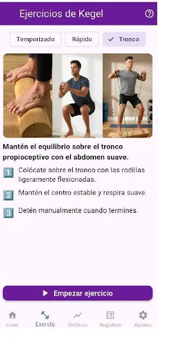
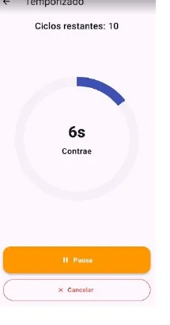
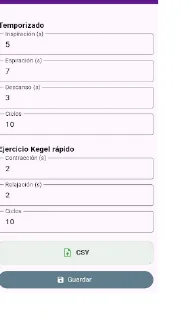
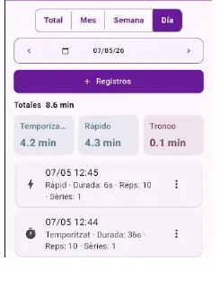
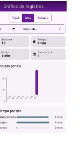

Mòdul Kegel
Manual Kegel
Guia pràctica per iniciar exercicis, configurar temps i seguir la constància.

Objectiu
El mòdul Kegel ajuda a fer el seguiment i l’execució dels exercicis per enfortir el sòl pelvià.
Inici d’exercici
1. Escull el tipus d’exercici
Pots treballar amb exercici temporitzat, exercici ràpid o tronc propioceptiu, segons el tipus d’entrenament que vulguis fer.
- Temporitzat: cicles guiats amb inspiració, contracció i repòs.
- Ràpid: cicles més curts de contracció i relaxació.
- Tronc: cronòmetre lliure sense cicles guiats.

2. Segueix el temporitzador
Quan comença l’exercici, la pantalla mostra el temps restant de cada fase i permet pausar, continuar o cancel·lar.
Configuració

Temps i cicles
Des d’ajustos pots configurar els segons de cada fase i els cicles dels exercicis temporitzats i ràpids.
També pots exportar els registres en format CSV.
Registres

Consulta i edita sessions
A la pantalla de registres pots veure totes les sessions guardades i filtrar-les per dia, setmana, mes o total.
- Afegir nous registres.
- Modificar o eliminar registres existents.
- Veure totals de minuts per tipus i període.
Gràfics

Seguiment de la constància
La pantalla de gràfics permet seleccionar períodes i veure el total de minuts per dia i per tipus d’exercici.